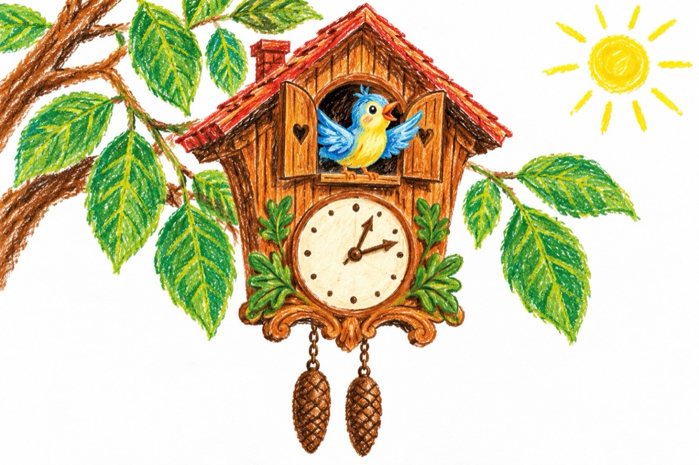

Ceasul cu cuc
Răsăritul de-l apuc
Îmi cântă mereu un cuc!
Și de vin și de mă duc
După mine strig-un cuc!
De mă scol sau de mă culc
Mă trezește-același cuc!
În pădure de mă duc
La ureche-mi cânt-un cuc!
Bătrânețea de-o apuc
Tre’ s-o-mpart mereu cu-n cuc!
Am ajuns un hăbăuc
Și-o să-i stric cuibul la cuc!
Iar acum că l-am stricat
Să mă scol am și uitat
Nu mai sunt nici hăbăuc,
Dar nici cucul nu e cuc!
Vreau din nou să am un cuc,
Să mă scoale când mă culc
Sau de vin sau de mă duc
De cobor sau urc în nuc,
În pădure de mă duc
Chiar de sunt un hăbăuc,
Vreau din nou ceasul cu cuc!
Vasile Groza